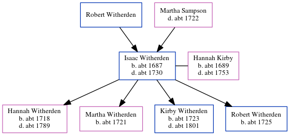

Hannah Russel (née Witherden) c1718 - c1789
[ Home ] | [ Calendar ] | [ Surnames Index ] | [ Errors ] | [ Family History ]The child of Isaac Witherden and Hannah Kirby, Hannah Witherden, the six times great-aunt of Nigel Horne, was born c. 1718, was baptised in St Peters, Thanet, Kent, England on 3 Jun 1718 and also married William Russel (with whom she had 8 children: William, John, Hannah, Mary, Martha, William, Anne and Sarah) there on 27 Sept 1742 (KFHS CD29).
She died c. 17891 and was buried in St Peters on 26 Feb 1789 (Aged 70KFHS CD29)1.
Parents
- Isaac was born c. 1687
- Hannah was born c. 1689
Children
- William was born c. 1743
- John was born c. 1745
- Hannah was born c. 1746
- Mary was born c. 1747
- Martha was born c. 1749
- William was born c. 1751
- Anne was born c. 1753
- Sarah was born c. 1754
Citations
- Kent, England, Tyler Index to Parish Registers, 1538-1874 Online publication - Provo, UT, USA: Ancestry.com Operations, Inc., 2010. This collection was indexed by Ancestry World Archives Project contributors.Original data - Frank Watt Tyler. The Tyler Collection. Canterbury, Kent, England: The Institute of Herald
Family Tree
Map
Generated by ged2site. Last updated on Jul 3, 2024
Known Issues
Birth date (abt 1718) has no citations
Marriage date (27 Sep 1742) has no citations
Date of birth is known, but not place
Date of death is known, but not place